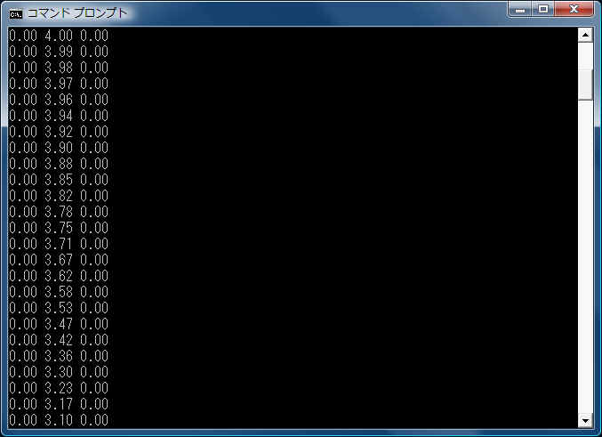
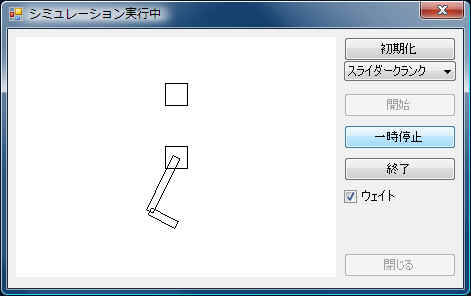
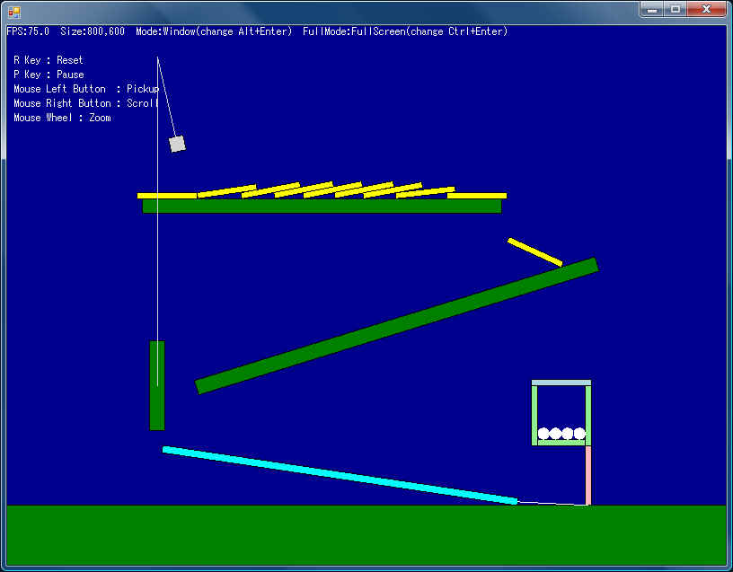
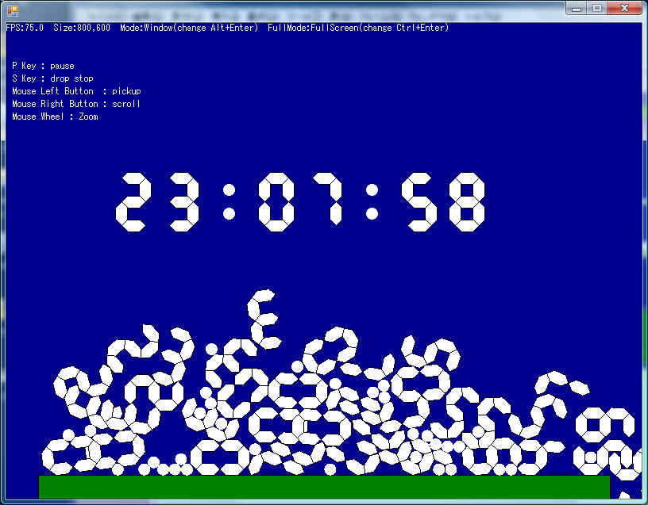

Box2DLibには下記のサンプルが付属します。
○HelloWorld
本家ライブラリに付属するサンプルをVBに移植したものです。
実行しても数値がコンソールに出力されるだけで
さっぱり面白くないかもしれませんが、
コードの意味を理解するには十分なサンプルです。
基本的に元のCソースと同じ作りですが、コメントは私が超意訳した日本語になってます。
まぁ、間違ってはいないと思いますが参考程度にして下さい。

○SimpleDraw
HelloWorldや本家サンプルTestBed中のSliderCrankなどの簡単なシュミレーションを実行し、
VB(.Net Framework)の標準機能で結果を描画します。
簡単な描画処理の参考になれば幸いです。

○Dominos
本家サンプルTestBed中のDominosを移植したサンプルです。
描画はDirectXを使用しています。
（すいませんが、環境によっては動作しないかもしれません。）

○Clock
一応オリジナルなサンプルですが、Dominosのインターフェース部分を流用してあるので
Main.vb以外はDominosと同じソースです。
現在時刻を表現するブロックが落下して
積み重なりこぼれていきます。
